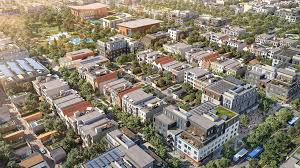

Culrural Diversity
California is home to people from all over the world, creating a mosaic of traditions, lannguages, and cuisines. From the bustling streets of Chinatown in San Fraansico to the historic Olvera Street in Los Angeles, cultural enclaves celebrate the rich heritage of communites, including Mexicam, Asian, African American, and Indigenous influences.
Urban Architecture
California's cities showcase a mix of historic and modern architecture. Iconic landmarks like the Golden State Bridge. the Hollywood Sign, and the futuristic Disney Concert Hall in Los Angeles blend with Spanish Missions and Victorian houses, exemlifying the state's evolution.
Arts and Entertainment
California is a globa; cultural powerhouse. Hollywood produces much of the world's entertainment, while art districts in cities like Downtown La and Oakland feature street art, galleries, and music venues. The state also boasts prestigious museums like The Getty Center and SFMoMA.
Night Life
From Hollywood nightclubs to San Francisco's Jazz bars and tech-inspired rooftop lounges in Silicon Valley, California's urban centers cter to a vibrant after-dark scene.